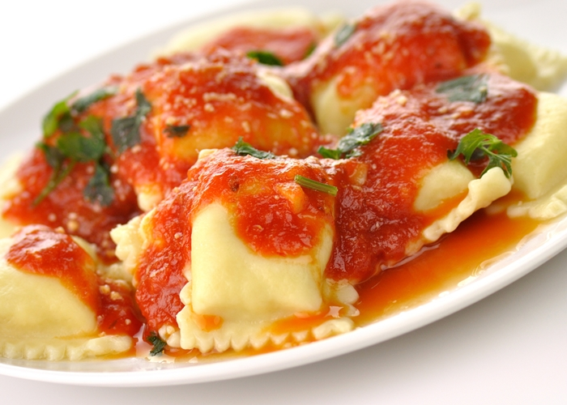
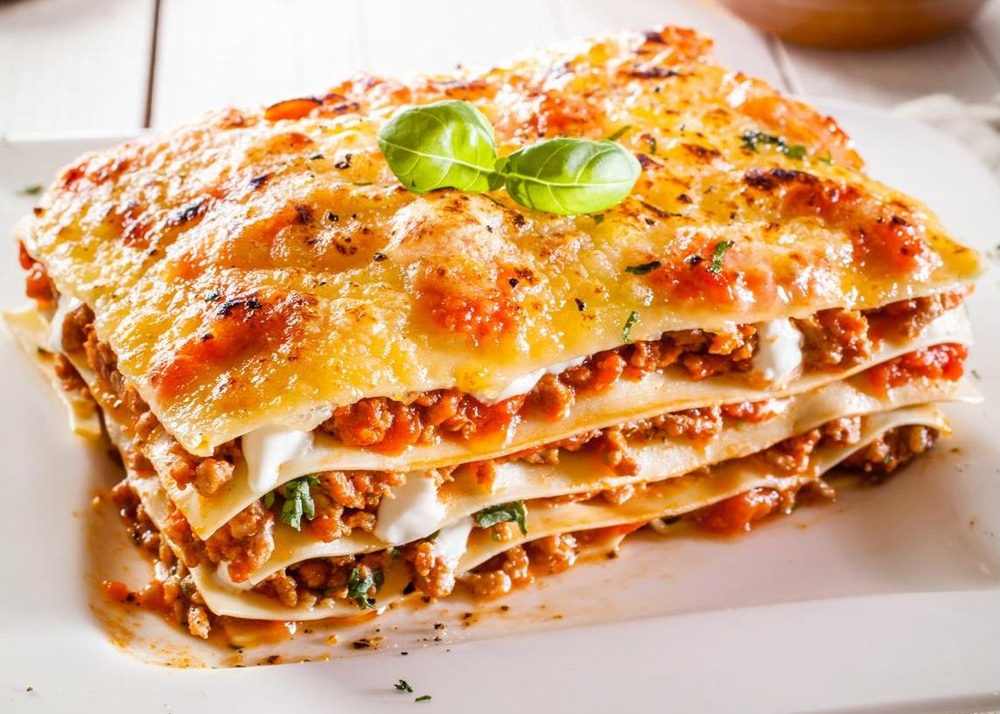

¡Bienvenido a nuestra cocina!
Aquí encontrarás recetas deliciosas, fáciles de preparar y pensadas para disfrutar en familia.
Desde platos tradicionales hasta opciones modernas, te guiamos paso a paso para que cocinar sea una experiencia práctica y sabrosa.
¡Explora, cocina y comparte el sabor!
Recetas Mexicanas
Tacos al Pastor

Tacos tradicionales de cerdo adobado, cocinados al trompo y servidos con piña, cebolla y cilantro.
Ingredientes:
- 500g carne de cerdo adobada
- 8 tortillas de maíz
- 1/2 cebolla picada
- Piña en cubos
- Cilantro picado
- Salsa al gusto
Procedimiento:
Se licúan los chiles guajillo hidratados con achiote, piña, vinagre, ajo, cebolla, sal, pimienta y orégano. Se marina la carne con esta mezcla durante al menos 4 horas. Luego, se asa la carne en un sartén o parrilla hasta que esté dorada. Se sirve en tortillas con piña asada, cebolla, cilantro, salsa y limón al gusto.
Enchiladas Verdes
Tortillas rellenas de pollo y bañadas en salsa verde.
Ingredientes:
- Aceite de Oliva Carbonell.
- 1 kg de tomates verdes, pelados.
- 1 cebolla chica, picada.
- 50 g de chiles jalapeños verdes.
- 190 g de queso crema.
- 1/2 taza de cilantro.
- 2 cucharadas de consomé de pollo en polvo.
- 12 tortillas de maíz delgadas, pasadas por aceite Toque de Oliva Carbonell caliente.
Procedimiento:
Para preparar las enchiladas verdes, primero se hierven los tomates verdes hasta que estén suaves. Luego se licúan junto con la cebolla picada, los chiles jalapeños, el queso crema, el cilantro y el consomé de pollo en polvo, hasta obtener una salsa homogénea. En una sartén con un poco de aceite de oliva, se vierte esta salsa y se cocina durante unos minutos hasta que espese ligeramente. Las tortillas se pasan rápidamente por aceite caliente para ablandarlas. Luego se rellenan con pollo deshebrado, se enrollan y se colocan en un plato. Finalmente, se bañan con la salsa verde caliente y se pueden decorar con cilantro picado o queso al gusto.
Chiles en Nogada

Chiles poblanos rellenos de queso o carne y capeados.
Ingredientes:
- 1 Pieza Granada (desgranada)
- 360 Gramos Leche Evaporada
- 225 Gramos Media Crema
- 5 Cucharadas Azúcar.
- 95 g Queso crema (a temperatura ambiente)
- 1/4 Taza Perejil fresco (picado)
- 6 Piezas Chile poblano (pelados y sin semillas)
- 1/4 Taza Pasas.
Procedimiento:
Para preparar los chiles en nogada, primero se asan los chiles poblanos hasta que su piel se queme. Se colocan en una bolsa de plástico para que suden y después se pelan, se les hace un corte y se les quitan las semillas y venas. Para el relleno, se puede usar queso crema y pasas. La nogada se prepara licuando la leche evaporada, la media crema, el queso crema a temperatura ambiente y el azúcar hasta formar una salsa cremosa. Los chiles se rellenan con la mezcla de queso y pasas, se colocan en un plato y se bañan con la nogada. Se decoran con granada desgranada y perejil fresco picado.
Mole
Plato tradicional mexicano con salsa espesa hecha de chiles, especias y chocolate, generalmente acompañado de pollo.
Ingredientes:
- 4 piezas de pollo cocido
- 100 g de pasta de mole
- 2 tazas de caldo de pollo
- 2 cucharadas de aceite
- 1 pieza de chocolate de mesa
- 1/4 de cebolla
- Ajonjolí tostado (opcional)
Procedimiento:
Para preparar el mole, se calienta el aceite en una sartén y se sofríe la pasta de mole hasta que suelte aroma. Luego se agrega el caldo de pollo poco a poco, mezclando constantemente hasta que la pasta se disuelva completamente. Se incorpora el chocolate de mesa y un cuarto de cebolla, y se cocina a fuego medio hasta que la salsa espese y el chocolate se derrita por completo. En un plato se colocan las piezas de pollo cocido y se bañan con la salsa de mole caliente. Opcionalmente se puede decorar con ajonjolí tostado.
Pozole

Caldo tradicional preparado con maíz grande (cacahuazintle) y carne, generalmente de cerdo, acompañado con lechuga, rábano y orégano.
Ingredientes:
- 500 g de maíz pozolero precocido
- 500 g de carne de cerdo (espinazo o pierna)
- 1 cabeza de ajo
- 1 cebolla
- Sal al gusto
- Chiles guajillo (opcional, para el caldo rojo)
- Lechuga, rábano, cebolla picada, orégano, limón y tostadas para acompañar
Procedimiento:
Para preparar el pozole, se coloca en una olla grande el maíz pozolero, la carne de cerdo, la cabeza de ajo y la cebolla. Se cubre con agua y se añade sal al gusto. Se cocina a fuego medio-alto durante varias horas, hasta que el maíz reviente y esté suave. Si se desea un pozole rojo, se hidratan chiles guajillo en agua caliente, se licúan con un poco del caldo y se agrega esta salsa al pozole. Para servir, se coloca el caldo con carne y maíz en un tazón y se acompaña con lechuga picada, rábanos, cebolla, orégano, limón y tostadas.
Recetas Italianas
Spaghetti Bolognesa

Pasta italiana servida con una salsa rica de carne molida y tomate.
Ingredientes:
- 400g de spaghetti
- 500g de carne molida de res
- 1 cebolla picada
- 2 dientes de ajo picados
- 800g de tomate triturado
- 2 cucharadas de pasta de tomate
- 1 zanahoria rallada
- 1 cucharadita de orégano seco
- Sal y pimienta al gusto
- Aceite de oliva
- Queso parmesano rallado para servir
Procedimiento:
Para preparar el spaghetti bolognesa, primero se cocina la pasta en agua con sal hasta que esté al dente. Mientras tanto, en una sartén grande se sofríe la cebolla y el ajo picado en aceite de oliva. Se añade la carne molida y se cocina hasta que esté dorada. Luego se agrega la zanahoria rallada, el tomate triturado, la pasta de tomate y el orégano. Se condimenta con sal y pimienta al gusto y se deja cocinar a fuego medio hasta que la salsa espese. Finalmente, se sirve la pasta con la salsa encima y se espolvorea con queso parmesano rallado.
Pizza Margarita

Pizza clásica italiana con salsa de tomate, mozzarella fresca y hojas de albahaca.
Ingredientes:
- 1 base de pizza
- 200g de salsa de tomate
- 250g de mozzarella fresca en rodajas
- Hojas de albahaca fresca
- Aceite de oliva
- Sal al gusto
Procedimiento:
Para hacer la pizza margarita, se extiende la base de pizza sobre una bandeja para hornear. Se unta la salsa de tomate de manera uniforme sobre la base. Luego se colocan las rodajas de mozzarella fresca por encima. Se agregan hojas de albahaca fresca y se rocía con un poco de aceite de oliva y sal. Se hornea a 200°C durante 10 a 15 minutos, o hasta que el queso esté derretido y la base dorada. Se sirve caliente.
Raviolis

Pasta rellena de ricotta y espinacas, servida con salsa de tomate.
Ingredientes:
- 500g de raviolis rellenos de ricotta y espinacas
- 400g de salsa de tomate
- 1 diente de ajo picado
- Hojas de albahaca fresca
- Queso parmesano rallado
- Sal y pimienta al gusto
- Aceite de oliva
Procedimiento:
Para preparar los raviolis, se cuecen en agua hirviendo con sal durante unos minutos hasta que estén al dente. Mientras tanto, en una sartén se sofríe el ajo picado en aceite de oliva y se añade la salsa de tomate. Se condimenta con sal y pimienta, y se agregan algunas hojas de albahaca fresca. Una vez listos los raviolis, se escurren y se mezclan suavemente con la salsa caliente. Se sirven con queso parmesano rallado por encima.
Risotto
Arroz cremoso cocinado lentamente con caldo y queso parmesano.
Ingredientes:
- 300g de arroz arborio
- 1 litro de caldo de pollo o vegetal
- 1 cebolla picada
- 2 dientes de ajo picados
- 100ml de vino blanco
- 50g de mantequilla
- 100g de queso parmesano rallado
- Sal y pimienta al gusto
- Aceite de oliva
Procedimiento:
Para hacer el risotto, se sofríe la cebolla y el ajo en aceite de oliva y mantequilla hasta que estén transparentes. Se añade el arroz arborio y se cocina unos minutos, removiendo constantemente. Se agrega el vino blanco y se deja evaporar. Luego, se incorpora el caldo caliente poco a poco, removiendo con frecuencia, permitiendo que el arroz lo absorba antes de añadir más. Una vez el arroz esté cremoso y cocido al punto deseado, se retira del fuego y se mezcla con el queso parmesano rallado. Se sazona con sal y pimienta al gusto y se sirve caliente.
Lasagna

Capas de pasta intercaladas con carne, salsa bechamel y queso gratinado.
Ingredientes:
- 12 láminas de pasta para lasaña
- 500g de carne molida de res
- 1 cebolla picada
- 2 dientes de ajo picados
- 800g de tomate triturado
- 500ml de salsa bechamel
- 200g de queso mozzarella rallado
- 100g de queso parmesano rallado
- Sal y pimienta al gusto
- Aceite de oliva
Procedimiento:
Para preparar la lasaña, se cuecen las láminas de pasta según las instrucciones del paquete. En una sartén se sofríe la cebolla y el ajo picado en aceite de oliva, luego se agrega la carne molida y se cocina hasta que esté dorada. Se incorpora el tomate triturado, se sazona con sal y pimienta, y se cocina hasta obtener una salsa espesa. En un refractario se coloca una capa de salsa de carne, seguida de una capa de pasta, luego salsa bechamel y queso mozzarella. Se repiten las capas y se termina con queso parmesano rallado por encima. Se hornea a 180°C durante 30 a 40 minutos, hasta que esté dorada y burbujeante. Se deja reposar unos minutos antes de servir.
Postres
Pastel de Tres Leches

Bizcocho esponjoso empapado en mezcla de tres leches.
Ingredientes:
- 6 huevos
- 1 taza de azúcar
- 1 taza de harina de trigo
- 1 cucharadita de polvo para hornear
- 1 lata de leche condensada
- 1 lata de leche evaporada
- 1 taza de leche entera
Procedimiento:
Para el Pastel de Tres Leches, primero separa los huevos y bate las claras hasta que formen picos suaves. Agrega el azúcar poco a poco mientras continúas batiendo hasta obtener una mezcla firme. Incorpora las yemas una por una, batiendo después de cada adición. Tamiza la harina junto con el polvo para hornear y agrégala a la mezcla de manera envolvente. Vierte la mezcla en un molde engrasado y enharinado. Hornea a 180 °C durante 30 minutos o hasta que al insertar un palillo, éste salga limpio. Deja enfriar el pastel y pica la superficie con un tenedor. Mezcla la leche condensada, leche evaporada y leche entera, y vierte esta mezcla poco a poco sobre el pastel frío. Refrigera al menos 2 horas antes de servir y decora si lo deseas.
Flan Napolitano

Postre cremoso hecho con leche condensada, leche evaporada, huevos y vainilla, bañado en caramelo.
Ingredientes:
- 1 lata de leche condensada
- 1 lata de leche evaporada
- 4 huevos
- 1 cucharada de esencia de vainilla
- 100 g de azúcar (para el caramelo)
Procedimiento:
Para el Flan Napolitano, derrite el azúcar en una sartén hasta que se convierta en caramelo y viértelo caliente en un molde cubriendo el fondo. Licúa la leche condensada, leche evaporada, huevos y vainilla. Vierte esta mezcla en el molde con el caramelo. Cubre con papel aluminio y colócalo dentro de una bandeja con agua caliente (baño maría). Hornea a 180 °C durante una hora. Deja enfriar completamente y refrigera al menos 4 horas antes de desmoldar y servir.
Gelatina de Mosaico
Colorido postre hecho con cubos de diferentes sabores de gelatina mezclados con una gelatina base de leche.
Ingredientes:
- 3 sobres de gelatina de sabores (fresa, limón, uva)
- 1 lata de leche condensada
- 1 lata de leche evaporada
- 1 sobre de grenetina natural (7g)
- 1/2 taza de agua para hidratar la grenetina
Procedimiento:
Para la Gelatina de Mosaico, prepara cada gelatina de sabor (como fresa, limón y uva) por separado siguiendo las instrucciones del paquete y refrigéralas hasta que cuajen. Luego, córtalas en cubos pequeños. Hidrata la grenetina natural con media taza de agua y disuélvela calentándola ligeramente. Licúa la leche condensada, leche evaporada y la grenetina ya disuelta. Coloca los cubos de gelatina en un molde y vierte la mezcla de leches encima. Refrigera por lo menos 4 horas hasta que cuaje completamente.
Pay de Limón
Postre frío con base de galleta, relleno de una mezcla cremosa de leche condensada, jugo de limón y crema.
Ingredientes:
- 1 paquete de galletas María (140g)
- 90 g de mantequilla derretida
- 1 lata de leche condensada
- 1 lata de leche evaporada
- 1/2 taza de jugo de limón
- 1 cucharada de ralladura de limón (opcional)
Procedimiento:
Para el Pay de Limón, tritura las galletas María y mézclalas con la mantequilla derretida hasta formar una masa. Coloca esta mezcla en un molde y presiona para formar una base uniforme. Refrigérala durante 10 a 15 minutos. Mientras tanto, licúa la leche condensada, leche evaporada, el jugo de limón y, si deseas, la ralladura de limón. Vierte esta mezcla sobre la base de galletas y refrigera durante al menos 2 horas antes de servir.
Arroz con Leche
Tradicional postre mexicano elaborado con arroz cocido en leche, azúcar y canela.
Ingredientes:
- 1 taza de arroz blanco
- 2 tazas de agua
- 1 raja de canela
- 4 tazas de leche entera
- 1 lata de leche condensada
- 1/2 taza de azúcar (opcional)
- 1 cucharadita de esencia de vainilla
- Canela en polvo para espolvorear
Procedimiento:
Para el Arroz con Leche, lava el arroz y cocínalo junto con el agua y una raja de canela hasta que el líquido se absorba. Agrega las 4 tazas de leche entera y cocina a fuego bajo, moviendo de vez en cuando. Añade la leche condensada y, si lo deseas más dulce, un poco de azúcar. Cocina por 15 minutos más, removiendo constantemente para evitar que se pegue. Añade la vainilla, retira del fuego y saca la raja de canela. Sirve caliente o frío y espolvorea con canela en polvo al gusto.
Recetas Vegetarianas
Chiles Rellenos de Queso
Chiles poblanos asados, pelados y rellenos de queso, bañados en salsa de jitomate.
Ingredientes:
- 4 chiles poblanos
- 200 g de queso Oaxaca o panela
- 4 jitomates
- 1/4 de cebolla
- 1 diente de ajo
- 1 taza de caldo de verduras
- Sal al gusto
- Aceite vegetal
Procedimiento:
Para preparar los Chiles Rellenos de Queso, primero asa los chiles poblanos directamente sobre la flama o en un comal caliente hasta que la piel se queme por completo. Luego colócalos en una bolsa de plástico y déjalos sudar por 10 minutos. Después, pélalos cuidadosamente, haz un corte a lo largo y retira las semillas. Rellena cada chile con tiras de queso Oaxaca o trozos de queso panela. Para la salsa, licúa los jitomates con el ajo y la cebolla. En una cacerola, calienta un poco de aceite, vierte la salsa y sazona con sal. Agrega el caldo de verduras y cocina por 10 minutos. Finalmente, sirve los chiles bañados con la salsa caliente.
Enchiladas rojas de Queso
Tortillas rellenas de queso fresco, bañadas en salsa roja y adornadas con crema, cebolla y lechuga.
Ingredientes:
- 12 tortillas de maíz
- 200 g de queso fresco
- 5 tomates rojos
- 2 chiles serranos
- 1/4 de cebolla
- 1 diente de ajo
- Crema al gusto
- Lechuga rebanada
- Sal y aceite al gusto
Procedimiento:
Para las Enchiladas Rojas de Queso, comienza preparando la salsa: cuece los tomates con los chiles serranos. Después, licúalos junto con la cebolla, el ajo y sal al gusto. Fríe la salsa en una sartén con un poco de aceite y cocina durante 5 minutos. Calienta las tortillas ligeramente para que sean flexibles. Rellena cada una con queso fresco desmoronado, enróllalas y colócalas en un plato. Baña con la salsa caliente y decora con crema, lechuga rebanada y cebolla al gusto.
Tacos de Papa
Tacos crujientes rellenos de puré de papa sazonado, servidos con salsa, lechuga y crema.
Ingredientes:
- 4 papas grandes cocidas
- 12 tortillas de maíz
- 1/4 de cebolla picada
- Sal y pimienta al gusto
- Lechuga rallada
- Crema y salsa al gusto
- Aceite vegetal para freír
Procedimiento:
Para hacer Tacos de Papa, machaca las papas cocidas hasta obtener un puré. Añade cebolla picada, sal y pimienta al gusto, y mezcla bien. Coloca un poco de puré en cada tortilla, dóblala y presiona los bordes ligeramente. Fríe los tacos en aceite caliente hasta que estén dorados y crujientes. Escúrrelos en papel absorbente. Sirve con lechuga rallada, crema y la salsa de tu preferencia.
Tostadas de Tinga de Zanahoria
Zanahoria rallada guisada con jitomate, cebolla y chipotle, servida sobre tostadas con frijoles refritos.
Ingredientes:
- 4 zanahorias ralladas
- 1/2 cebolla fileteada
- 2 jitomates
- 1 chile chipotle en adobo
- 1 diente de ajo
- 1 taza de frijoles refritos
- 4 tostadas
- Sal y aceite vegetal al gusto
Procedimiento:
Para las Tostadas de Tinga de Zanahoria, licúa los jitomates con el ajo y el chipotle. En una sartén, calienta un poco de aceite y sofríe la cebolla hasta que esté transparente. Agrega la zanahoria rallada y cocina por unos minutos. Vierte la salsa licuada y sazona con sal. Cocina hasta que la zanahoria esté suave y la mezcla espesa un poco. Unta cada tostada con frijoles refritos y coloca encima la tinga de zanahoria. Sirve caliente.
Calabacitas a la Mexicana
Calabacitas cocinadas con jitomate, cebolla, elote y chile verde. Perfectas como guarnición o platillo ligero.
Ingredientes:
- 3 calabacitas cortadas en cubos
- 2 jitomates
- 1/2 cebolla picada
- 1 chile serrano
- 1/2 taza de granos de elote
- 1 diente de ajo
- Sal y pimienta al gusto
- Aceite vegetal
Procedimiento:
Para las Calabacitas a la Mexicana, calienta un poco de aceite en una sartén y sofríe la cebolla y el ajo hasta que estén transparentes. Añade el chile serrano picado y los jitomates picados en cubos. Cocina hasta que el jitomate suelte su jugo. Agrega las calabacitas y los granos de elote, sazona con sal y pimienta, y cocina a fuego medio hasta que las calabacitas estén suaves pero firmes. Sirve como guarnición o platillo principal.